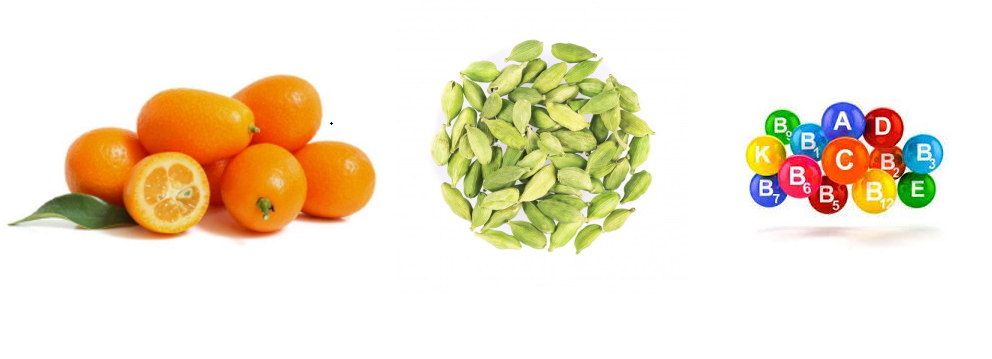

Un nuevo producto adelgazante con el que puedes lograr un tremendo éxito
Millones de mujeres y hombres en España siguen intentando adelgazar. A menudo, una dieta sigue a otra. Pruebe todo tipo de dietas y diversos productos para adelgazar. Los resultados en su mayoría dejan a la gente decepcionada. ¡Esto cambiará ahora con la llegada de FORTUNELLA!
Pero, ¿qué es Fortunella? ¿Qué hay en estas gotas? ¿Qué lo hace tan especial? ¿Es seguro de usar? ¿Qué dicen los compradores sobre esto? Hemos estudiado cuidadosamente este nuevo producto adelgazante y lo hemos probado nosotros mismos.
¿Qué es Fortunella?
Este complemento alimenticio a base de la fruta Fortunella es el primero del mundo y se llama Fortunella. Se dice que le ayuda a perder peso sin seguir dietas estrictas. Cualquier persona que desee perder o mantener su peso puede tomar Fortunella. Según el fabricante, cuando se toman con regularidad, las gotas tienen los siguientes beneficios:
- Reducción de la sensación el hambre
- Disminución de la ingesta de calorías al comer menos alimentos
- La grasa de los alimentos no se acumula
- Cambio favorable en los hábitos alimentarios
- Descomposición natural del exceso de grasa corporal
- Mejora la salud física y mental
- Manteniendo constantemente el peso deseado
- Previene el efecto yo-yo que se encuentra comúnmente en las dietas
Fue desarrollado por una empresa europea. Después de una larga e intensa investigación y desarrollo: “Fortunella es el primer y único producto para la pérdida de peso en todo el mundo, basado en el fruto de Fortunella, diseñado para la pérdida de peso permanente. El efecto se basa en desarrollos innovadores que afectan la reducción natural de los alimentos ”, escribe el fabricante.
¿Qué se incluye en estas gotas?
Ingredientes para reducir el hambre de forma natural
En Fortunella se incluyen ingredientes de alta calidad y cuidadosamente seleccionados. Los ingredientes naturales están compuestos por extractos de frutas, vitaminas y minerales. Composición:
- Extracto de Fortunella
- Extracto de cardamomo
- Extracto de aceite de cilantro
- L-carnitina
- Vitaminas (A, B1-B6, B12, C, D)
- Minerales (magnesio, calcio, zinc, manganeso, etc.)
Los extractos contenidos ayudan al cuerpo a producir serotonina y dopamina y tienen la capacidad de regular el apetito, mejorar el estado de ánimo, relajarse, regular el sueño, motivar a tomar medidas y reducir significativamente los antojos de dulces.
Nota del editor: La ingesta de alimentos es una de las funciones biológicas más importantes. Está controlado por una serie de estímulos hormonales y nerviosos. En esto juegan un papel importante los neurotransmisores (serotonina, dopamina, etc.). Estas sustancias regulan el apetito. Por ejemplo, incluso una deficiencia leve de serotonina puede alterar la regulación de la dieta y el apetito. El resultado es un aumento de peso.“Todos los ingredientes contienen solo lo que realmente se necesita para obtener el efecto deseado. Sin ingredientes adicionales e innecesarios, como es el caso de muchos otros fabricantes. Además, todos los productos Fortunella son 100% veganos y están elaborados únicamente con los mejores ingredientes orgánicos ”, dice el fabricante.
¿Qué hace que Fortunella sea tan única?
No tiene análogos en el mundo, la demanda es enorme.
Los productos para bajar de peso son ahora un centavo la docena. Todos prometen un gran éxito. Pero, desafortunadamente, en la mayoría de los casos, esto no es más que un buen marketing y, por lo general, la pérdida de peso prometida no ocurre. Pero, ¿qué innovaciones hacen que Fortunella sea tan eficaz y diferente del resto de productos del mercado? Le preguntamos al fabricante.
Suena muy prometedor. pero de verdad funciona? Antes de probar nosotros mismos, fuimos a buscar reseñas de personas que ya probaron estas gotas y rápidamente encontraron lo que estaban buscando.
Experiencia y opiniones
Aunque Fortunella solo está disponible recientemente en España, ya se pueden encontrar decenas de reseñas de consumidores en línea. Esto demuestra que los clientes están muy contentos con el producto. Muchas personas dicen que después de tomar el medicamento, han perdido peso significativamente y ahora se sienten mucho mejor y más cómodas. Muchos también elogian el hecho de que Fortunella se presenta en forma de gota. Además, a menudo no hay alergias ni efectos secundarios.
Los clientes informan de un gran éxito y experiencias consistentemente positivas
A juzgar por los numerosos comentarios y críticas positivas, Fortunella realmente está cumpliendo lo que promete. No solo queremos confiar en los comentarios de los clientes, también realizamos pruebas.
Probando Fortunella
Nuestra editora asistente Sylvia (43) siempre ha querido perder unos kilos. Ella también tiene varios programas de acondicionamiento físico costosos y dietas detrás de ella, pero sin el resultado deseado. Por lo tanto, Sylvia aceptó de inmediato probar Fortunella durante 4 semanas.
Semana 1:
Sylvia pidió el producto en el sitio web oficial del fabricante y lo recibió en solo 2 días. La entrega se realizó por mensajería directamente a casa, el pago se realizó al recibir el pedido y se realizó sin problemas. Sylvia quedó impresionada con la calidad del producto. El empaque tiene un diseño muy atractivo. El paquete contiene la siguiente recomendación: "Media hora antes de las comidas, agregue 30 gotas a un vaso de agua o jugo, 2 veces al día". Sylvia comenzó a tomar 30 gotas por la mañana y por la noche el mismo día, de acuerdo con las recomendaciones del fabricante. Las gotas tienen un agradable sabor cítrico.
2ª semana: Ha pasado una semana y Sylvia no ha notado muchos cambios. Sin embargo, la ingesta fue bien tolerada y no hubo efectos secundarios no deseados. Sin embargo, recurrimos al fabricante. “Fortunella debe usarse durante al menos 5-10 días seguidos para que las sustancias puedan mostrar su efecto y lograr el efecto deseado”, respondió el fabricante. De hecho, a partir de la segunda semana, Sylvia sintió que estaba comiendo mucho más rápido y no podía terminar su ración habitual. Sylvia inició la prueba con 71 kg. Dos semanas después, la balanza mostró 68,5 kg. Así, los primeros éxitos ya eran evidentes.
3ª semana: "¡Adiós a los episodios de hambre!", Nos dijo Sylvia. Los antojos habituales de azúcar han desaparecido por completo. También notó que se sentía mejor y de mejor humor. Además, no hubo efectos secundarios no deseados. Durante la tercera semana, Sylvia pudo perder otros 2,3 kg de peso.
Semana 4: Sylvia completó la autocomprobación con Fortunella después de cuatro semanas. En total, perdió 6,8 kilogramos en un mes sin abandonar su dieta habitual. “Realmente me di cuenta de cómo ha cambiado mi conducta alimentaria. Comí mucho más rápido que antes y comí menos. Los ahorros efectivos en calorías, por supuesto, se ven relativamente rápido en la báscula. Casi 6 kilogramos en menos de 4 semanas y sin ayuno, ¡nunca lo había hecho antes! Continuaré tomando kakli hasta que alcance el peso deseado ”, esta es la conclusión de Sylvia.
El resultado de nuestra autocomprobación también es muy positivo. Fortunella realmente hace lo que promete y, por lo tanto, es una buena opción para todos aquellos que buscan perder peso de forma rápida y sencilla.
Nuestra conclusión sobre Fortunella

Estamos impresionados con la efectividad de este producto, por lo que se lo recomendamos.
Vemos a Fortunella como un producto muy eficaz que puede ayudarle a perder peso. Al reducir la ingesta de calorías, Fortunella promueve la pérdida de peso permanente y permite un control de peso fácil y práctico. Debido al cambio positivo en la conducta alimentaria, no se produce el terrible efecto yo-yo. Numerosas críticas positivas de los clientes y resultados de pruebas sorprendentemente buenos hablan por sí mismos.
Fortunella - comprar barato
Fortunella actualmente solo lo vende el fabricante y no está disponible en Amazon o Ebay. La opción más barata es ir directamente a la tienda en línea del fabricante en www.vamy-perfect-body.de. La entrega se realiza en varios días, el pago es contra entrega. www.vamy-perfect-body.de. La entrega se realiza en varios días, el pago es contra entrega.
Una oferta exclusiva para nuestros lectores
Si por fin quieres deshacerte de esos kilos de más, definitivamente les gustará la siguiente oferta que hace Fortunella por poco tiempo en exclusiva para nuestros lectores: